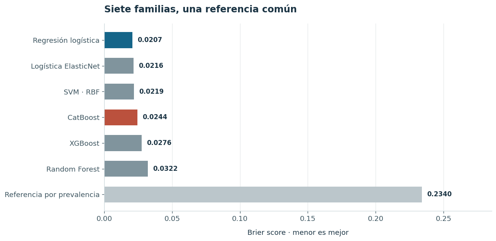
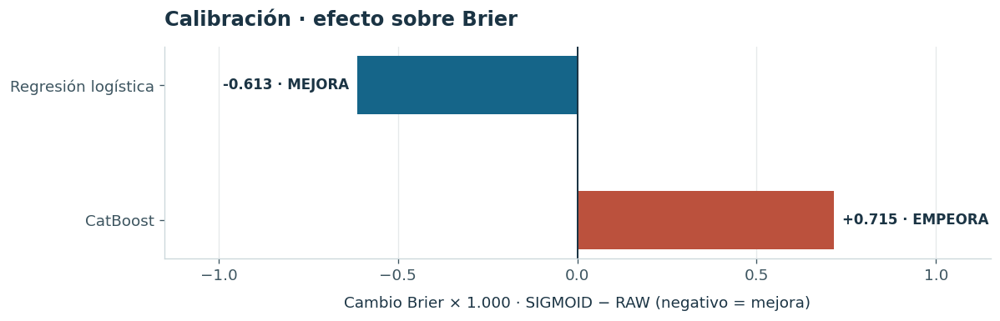

¿Cómo se comparan los modelos?
Benchmark exploratorio de siete familias en predicciones fuera de fold de desarrollo, con métricas de discriminación, errores y Brier.
Investigación reproducible · Resultados congelados
Qué muestran siete familias de modelos y qué cambia al calibrar probabilidades en el conjunto de desarrollo Wisconsin Diagnostic Breast Cancer.
01 · Comprender el estudio
El dataset contiene 30 características morfométricas derivadas de aspiración con aguja fina (FNA), no de mamografías. El objetivo es estudiar procedimientos de modelado, comparación y calibración, no construir un producto sanitario.
Benchmark exploratorio de siete familias en predicciones fuera de fold de desarrollo, con métricas de discriminación, errores y Brier.
RAW frente a SIGMOID en regresión logística y CatBoost, con comparaciones pareadas de Brier, log-loss y decisiones.
Curvas de fiabilidad, variabilidad entre folds y análisis de falsos negativos. Son diagnósticos descriptivos, no validación externa.
02 · Explorar la evidencia
Estas imágenes son copias exactas de gráficos presentes en el informe congelado. No contienen cálculos nuevos. El documento completo incluye cinco figuras y seis tablas, cuatro de ellas científicas.


Fuente: informe WDBC ERL v2, edición 0.1.1. Los gráficos se verifican byte a byte contra las imágenes integradas en el HTML original.
03 · Leer la metodología
Consultar las figuras, las tablas y las referencias del informe completo
04 · Alcance científico
El holdout histórico de 114 observaciones fue examinado previamente y está excluido de este informe: no constituye una prueba independiente. Los resultados de desarrollo tampoco establecen eficacia diagnóstica, transportabilidad, seguridad clínica ni cumplimiento regulatorio.
No se despliegan modelos ni se ejecuta código en esta página. El uso es exclusivamente académico y metodológico.
Accede al informe estático con sus cinco gráficos, seis tablas, metodología y limitaciones.